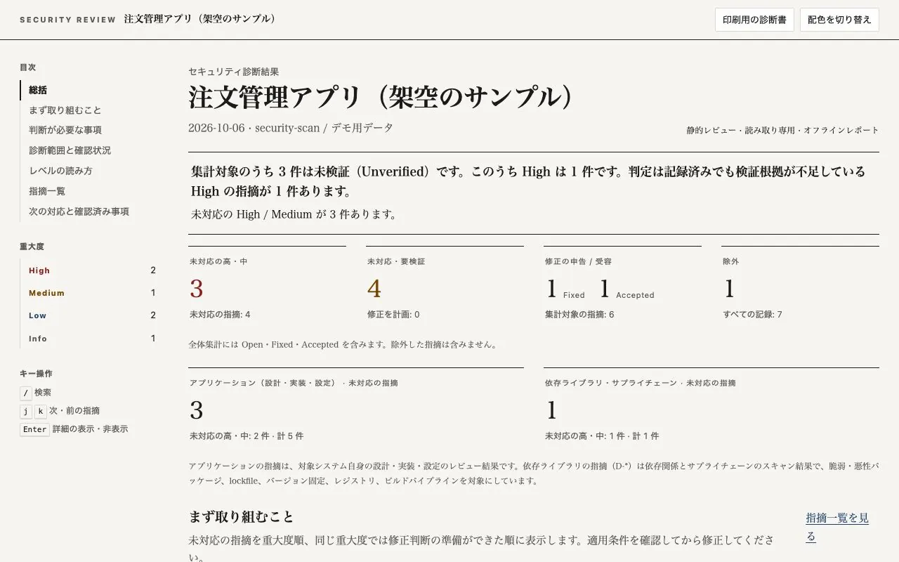
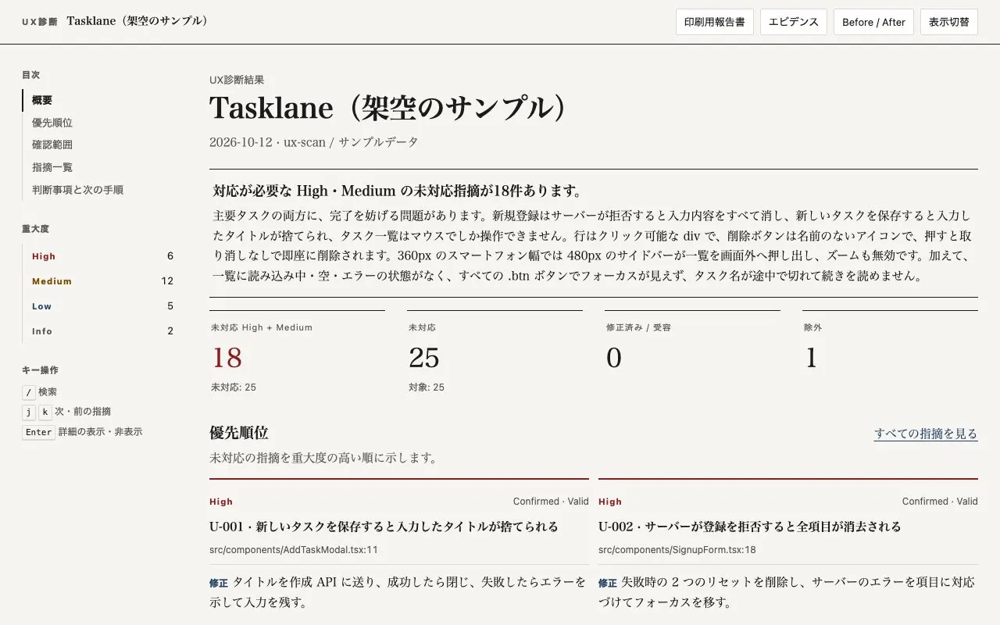
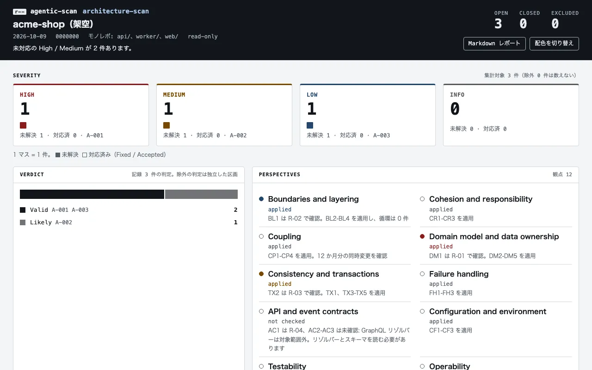
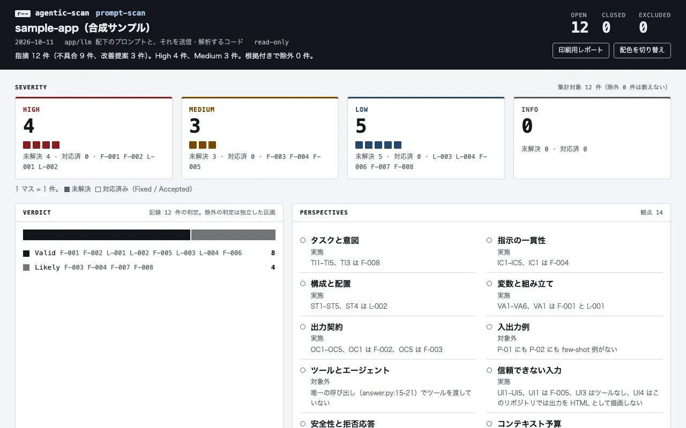

12 review skills for Claude Code · Codex · Antigravity
コードに触れずに、裏の取れた指摘を。
agentic-scan は、AI エージェントがあなたのリポジトリを読んで診断するための 12 のスキルです。セキュリティから UX まで、どの指摘にもファイルと行と検証の判定がつきます。
12 skillsread-onlydashboard + report
jq -r '.findings[] | [.id, .severity, .validation.verdict, .location] | @tsv' \
security-scan/examples/findings.sample.ja.json | column -t
F-001 High Valid src/api/orders.py:42 D-001 High Unverified package-lock.json:18 F-002 Medium Likely src/api/pagination.py:7 F-003 Low Unverified deploy/php.ini:9 F-004 High FalsePositive src/api/reports.py:88 F-005 Low Valid src/api/middleware.py:23 F-006 Info Unverified docs/logging.md:12
F-004 は、検証で誤検知と判定された指摘です。消されずに、根拠つきで記録に残ります。「SQL 断片は固定の列名リストだけから構築されます。リクエスト値が断片に入る経路はありません。」
観点ごとに、別のスキル。
どのスキルも一つの観点だけを受け持ち、それぞれ自分の手順で進みます。添えた指摘は、各スキルに同梱されたサンプルデータ(すべて架空のアプリ)から引いたものです。
architecture-scan
モジュールの境界と依存、データの持ち主、障害時の振る舞い、運用のしやすさ。
RECON ─► CHECKLIST ─► REVIEW ─► VERIFY ─► REPORT
High Refund job writes invoices directly, skipping billing's tax rules
bug-scan
git 履歴からバグの入り口を分類し、同じ入り口が今のコードに残っていないかを探す。
RECON → CATALOG → HISTORY → TRIAGE → REVIEW → VERIFY → RECONCILE → REPORT
High ゼロ幅空白のクーポンで注文が確定する
data-integrity-scan
制約の欠落、危険なマイグレーション、トランザクションの抜け、更新の消失。
RECON ─► CHECKLIST ─► REVIEW ─► VERIFY ─► PLAN ─► REPORT
Medium Wallet debit reads the balance and writes it back without a lock
infra-security-scan
Terraform・CloudFormation・Kubernetes の設定から、露出と権限、攻撃経路。クラウドの API は呼びません。
RECON ─► CHECKLIST ─► REVIEW ─► VERIFY ─► REPORT
High 顧客エクスポート用バケットが allUsers に公開されている
logic-scan
料金・税・期限・状態遷移など、業務ルールの誤り。指摘ごとに反例がつきます。
RECON ─► CHECKLIST ─► REVIEW ─► VERIFY ─► PLAN ─► REPORT
High The invoice rounds tax per line while the charge rounds it once, so the card is charged a different amount
performance-scan
N+1 や上限のないクエリ、インデックス、ブロッキング I/O、キャッシュ、バンドル。
RECON ─► CHECKLIST ─► REVIEW ─► VERIFY ─► REPORT
High Order list lazy-loads items per order and products per item (N+1)
privacy-scan
個人データの流れ、同意、保存期間と削除、第三者への提供、ログ。法的な見解ではありません。
RECON ─► CHECKLIST ─► REVIEW ─► VERIFY ─► REPORT
High Analytics SDK initialises before consent
prompt-scan
LLM のプロンプトと、それを組み立てて解析するコード。変数の抜け、矛盾、出力形式のずれ。
RECON ─► CHECKLIST ─► REVIEW ─► VERIFY ─► REPORT
High テンプレート変数 context が一度も埋められていない
prune-scan
役目を終えたコード、機能、フラグ、依存、設定。消してよいものと、その順番。
RECON → UNITS → CHECKLIST → REVIEW → VERIFY → REPORT
High 認証なしの /debug/dump がシークレットを含む設定全体を返す
security-scan
認証・認可、テナント越えのアクセス、インジェクション、秘密情報、依存パッケージ。
RECON ─► CHECKLIST ─► REVIEW ─► VERIFY ─► REPORT
High 注文詳細 API に所有者の確認がない
test-gap-scan
テストをすり抜ける欠陥。弱いアサーション、実物と違うモック、CI で動かないテスト。
RECON ─► CHECKLIST ─► REVIEW ─► VERIFY ─► PLAN ─► REPORT
Medium The shared gateway mock accepts any amount the real gateway refuses
ux-scan
画面と主要な操作の流れ、状態、フォーム、アクセシビリティ、マイクロコピー。
RECON → FLOWS → CHECKLIST → REVIEW → VERIFY → REPORT
High 新しいタスクを保存すると入力したタイトルが捨てられる
読んで、反証してから、渡す。
工程はスキルごとに違っても、決まりは同じです。
- read-only
- 既定では何も書き換えません。コードを編集せず、デプロイ済みのシステムに通信も送りません。テストの追加や使い捨ての DB での試行は、明示的に頼んで許可したときだけです。
- verify
- 指摘には判定がつきます。経路をたどり直して、成り立つか(Valid)、まだ確かめられないか(Unverified)、誤検知か(FalsePositive)を根拠とともに記録します。
- keep
- 誤りと判定した指摘も消しません。FalsePositive や NotApplicable として根拠つきで残し、何を除外したかが見えるようにします。
- decide
- 決めるのは人です。受け入れるリスクや優先順位は、ダッシュボードの「判断が必要な事項」として分けて渡します。
結果は、一枚で開けるダッシュボードに。
単体の HTML なのでオフラインのまま開けます。記録は findings.json に残り、再スキャンとの比較や SARIF への書き出しにも使えます。以下は各スキルの make demo で生成した実際の画面です。




cd security-scan make demo NO_PDF=1 DEMO_OUT=../out/security-scan
wrote ../out/security-scan/dashboard.html wrote ../out/security-scan/assessment.html
- chat
- 会話の中で、まず読むべきことだけを要約。
- dashboard
- 単体で開ける HTML。検索とキーボード操作に対応。
- report
- Markdown、または印刷用の HTML / PDF。形式はスキルにより異なります。
- findings.json
- すべての記録。再スキャンとの比較、SARIF への書き出し。
導入は 3 ステップ。
必要なのは Python 3.9 以上(一部のスキルは 3.10 以上)と make です。追加のパッケージは入りません。PDF の出力には Chrome / Chromium を使います。
-
取得する
shellgit clone https://github.com/simota/agentic-scan.git cd agentic-scan
-
エージェントにつなぐ
shellmake link # 入っているエージェントすべてにリンク make status # つながったスキルを確認
-
頼む
診断したいリポジトリで、エージェントにそのまま頼みます。
このリポジトリを security-scan で診断して
よくある質問
コードを書き換えられることはありますか。
ありません。各スキルは既定で読み取り専用です。例外は依頼と許可があった場合だけで、logic-scan と test-gap-scan は指摘を確かめるテストを追加して実行し、data-integrity-scan は使い捨てのローカル DB でマイグレーションを試します。performance-scan のベンチマークも、依頼があったときに手元の環境でだけ動かします。修正そのものは別の依頼として扱います。
本番環境やクラウドに接続しますか。
しません。デプロイ済みのシステムへ通信を送らず、infra-security-scan もクラウドの API を呼ばずに設定ファイルだけを読みます。data-integrity-scan も本番のデータベースには接続しません。
どのエージェントで使えますか。
Claude Code、Codex、Antigravity です。make link が、インストールされているものすべてのスキル置き場にリンクを作ります。make link AGENT=claude のように一つだけ選ぶこともできます。
privacy-scan の結果は法的な判断になりますか。
なりません。ソースコードの技術的なレビューであり、法的な見解ではありません。アプリ自身の約束や、指定した要件とコードを照らし合わせます。
日本語でレポートを受け取れますか。
受け取れます。各スキルのダッシュボードとレポートは日本語と英語に対応しています。
自分の手元でサンプルを見られますか。
各スキルのディレクトリで make demo を実行すると、同梱のサンプルデータからダッシュボードを生成します。このページの画面もそうして作ったものです。